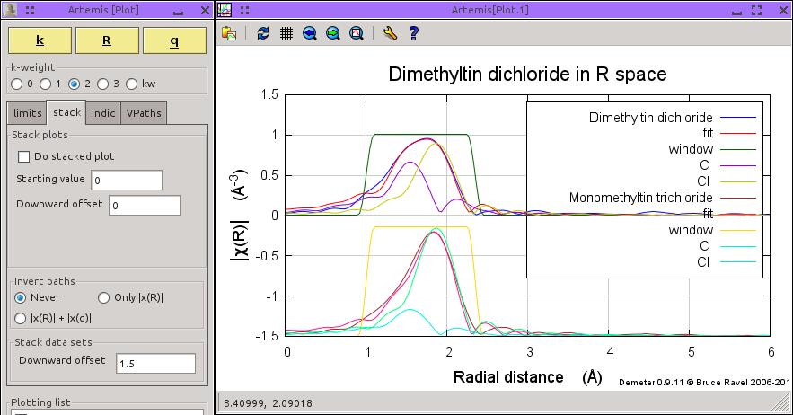

Stacked plots
 With a large number of
items in the plotting list, a plot may become quite hard to understand
due to the large number of overlapping traces. With a large number of
items in the plotting list, a plot may become quite hard to understand
due to the large number of overlapping traces.
The “stack” tab holds controls for
providing vertical offset between traces in a plot. The top set of
controls works very similarly to the stacking feature in ATHENA.
When the check button is clicked on, paths will be offset vertically
as indicated by the the two values. The initial value is the offset
applied to the data. All parts of the data (fit, window, etc) will
also be plotrted with that offset. The second value is a vertical
displacement between successive paths. Note that the displacement is
downward – that is, a value of +2 means to displace each path by -2
on the y-axis. In this way, traces appear in the same top-to-bottom
order as the plot legend when a positive value is chosen.
The second group of controls is used to multiply paths by -1 before
plotting. This results in the data pointing up and the individual
paths pointing down. This feature is turned off when the check button
for a stacked plot is clicked on.
The last control is used to specify a vertical offset between data
sets when plotting more than one data set from a multiple data set
fit. Note that this stacking parameter and the individual data set
stacking parameters will each provide some vertical offset, requiring
careful consideration for an attractive plot.
Stacked plot

Here is an example of a stacked plot. Shown are Co foil data, the
fit function, and the fitting window. Offset downward are the paths
from the first two coordination shells as evaluated in the fit. Note
that the size of an appropriate offset depends on the k-weighting and
on the space the plot is made it. ARTEMIS does not attempt to
compute a sensible value – that is up to you.
Inverted plot

Here we see a plot with inversion. This is the same fit as in the
stacked plot above, except that the first two coordination shells as
evaluated in the fit are pointing downward.
Data stacke plot

Finally, here is an example of stacked data sets. This is a multiple
data set fit to dimethytin dichloride and monomethyltin trichloride.
The visualize both parts of this fit, it is convenient offset the
monomethyltin trichloride data and paths downward by enough to
completely separate the traces associated with each data set. Again,
the value of the offset depends on the k-weighting and on the sapce in
which the plot is made.
|